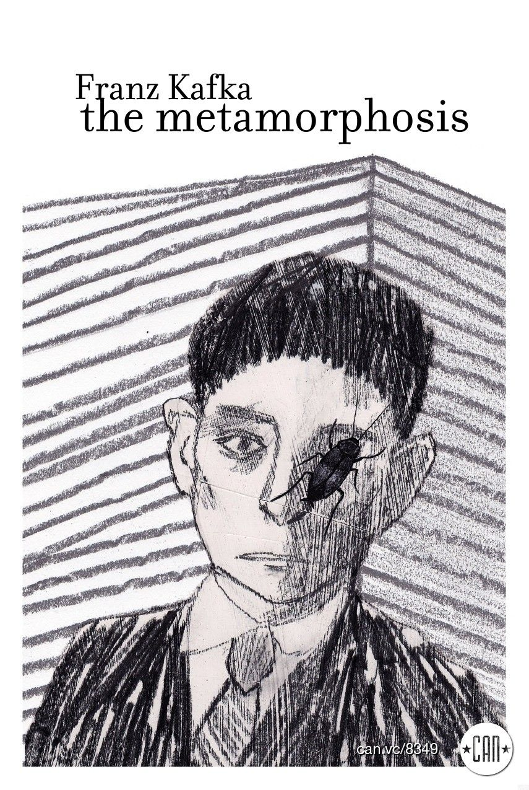

A obra-prima de Franz Kafka, publicada em 1915

A Metamorfose (Die Verwandlung) narra a história de Gregor Samsa, um caixeiro-viajante que, ao acordar, descobre-se transformado em um inseto monstruoso. A narrativa explora temas como alienação, isolamento e a crise de identidade, refletindo as ansiedades da modernidade.
A obra é uma crítica à sociedade capitalista, onde o indivíduo é reduzido a uma função, e ao mesmo tempo, uma reflexão sobre a condição humana e o sofrimento existencial.
Kafka utiliza uma linguagem objetiva e direta, criando um contraste marcante entre o absurdo da situação e a frieza da narrativa. Seu estilo expressionista e existencialista molda uma obra que continua influenciando a literatura e o pensamento moderno.
"Quando Gregor Samsa acordou certa manhã depois de um sonho agitado, encontrou-se em sua cama metamorfoseado num inseto monstruoso."